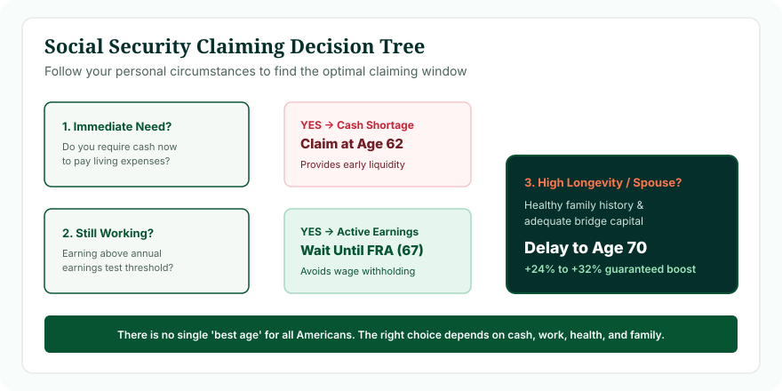
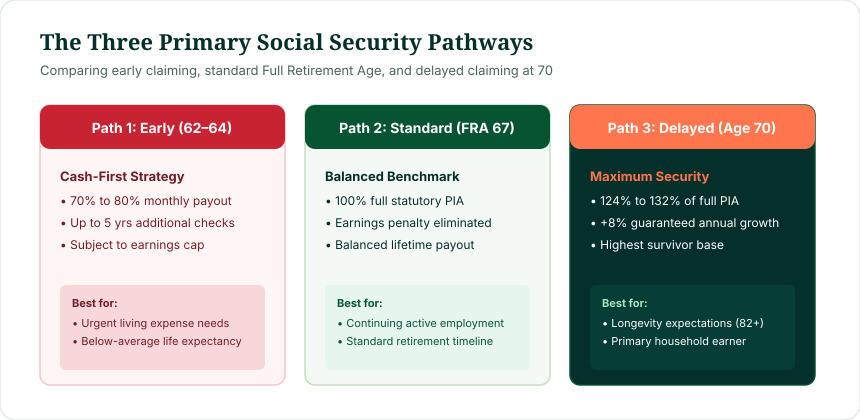

Because Social Security formulas are actuarially adjusted, each claiming age excels for specific circumstances:
- Claim at Age 62 IF: You have urgent cash flow needs, poor health or shorter life expectancy, have been forced out of the workforce without other income, or want maximum leisure early.
- Claim at Full Retirement Age (67) IF: You plan to continue working full-time (avoiding the earnings test penalty), want 100% of your baseline benefit without early haircuts, and have average life expectancy (mid-80s).
- Delay Until Age 70 IF: You are in excellent health, expect to live past age 82, have 401(k)/IRA assets to bridge living expenses, or are the primary household earner seeking to maximize the survivor benefit for your spouse.
Before committing to a strategy, pinpoint your exact statutory Full Retirement Age and milestone dates using our verified Social Security Age Calculator.
Is There One Best Age to Claim Social Security?
No. Financial pundits who claim that "everyone should delay until 70" or "everyone should claim at 62 before the trust funds run dry" are ignoring personal financial reality. The Social Security claiming decision is not merely a mathematical optimization problem; it is a holistic risk-management choice.
The optimal age depends on balancing two opposing risks:
- Longevity Risk (Outliving Your Money): If you live into your 90s, delaying until 70 provides an irreplaceable inflation-protected annuity that guarantees you will never run out of money.
- Mortality Risk (Passing Away Early): If you delay until 70 but pass away at 68, you receive zero dollars from the system you paid taxes into for four decades.
The Three Main Social Security Claiming Strategies
1. The Cash-First Strategy (Age 62)
Focuses on immediate cash flow and early lifestyle flexibility. Accepts a permanent 25% to 30% reduction in exchange for receiving up to 96 additional monthly checks before age 70.
2. The Balanced Baseline (FRA 67)
Captures 100% of your Primary Insurance Amount. Completely eliminates the Retirement Earnings Test, allowing active full-time employment alongside benefits.
3. The Maximum Security Strategy (Age 70)
Treats Social Security as late-life catastrophe insurance. Postpones benefits to capture guaranteed +8% annual growth, locking in up to 124% (or 132%) of PIA for life.

Figure 1: Strategic decision tree mapping personal circumstances to the optimal Social Security claiming age.
Understanding Your Full Retirement Age Baseline
Every claiming comparison is anchored to your statutory Full Retirement Age under Title II of the Social Security Act. For workers born in 1960 or later, FRA is 67. For earlier cohorts, FRA ranges from 66 to 66 and 10 months. Review our comprehensive guide: How Is Social Security Full Retirement Age Calculated?.
The Strategic Case for Claiming at Age 62
The Advantages:
- Immediate Liquidity: Delivers essential monthly income to pay mortgages, groceries, or medical bills right now.
- Preserves Personal Assets: Allows retirees to avoid liquidating depressed stock portfolios during market downturns.
- Maximum Leisure Years: Provides financial support during your youngest, healthiest, and most active retirement years.
The Disadvantages:
- Permanent 30% Cut: For an FRA of 67, your monthly check is permanently 30% lower for the rest of your life.
- Retirement Earnings Test: If you earn more than $23,400 (2025 limit), the SSA withholds $1 for every $2 excess.
- Smaller Surviving Spouse Benefit: If you are the primary earner, claiming early limits the survivor check your spouse can inherit.
Read our full breakdown on early claiming: Can You Get Social Security at 62?.
The Strategic Case for Claiming at Full Retirement Age (67)
The Advantages:
- 100% Unreduced Benefit: You collect your full Primary Insurance Amount without early retirement penalties.
- Unlimited Earnings: You can earn $100,000 or $500,000 in employment wages without losing a single dollar to the earnings test.
- Balanced Break-Even: Reaches break-even against age 62 claims before age 79—well within median American lifespans.
The Strategic Case for Delaying Until Age 70
The Advantages:
- Maximum Monthly Check: Yields 124% of your full benefit (for FRA 67) or 132% (for FRA 66). On a $2,000 PIA, that means $2,480/mo vs $1,400/mo at 62.
- Guaranteed +8% Annual Return: No bank CD, treasury bond, or fixed annuity offers a guaranteed 8% annual inflation-adjusted return backed by the federal government.
- Highest Spousal Survivor Safety Net: Locks in the maximum survivor benefit for your surviving partner.
The Disadvantages:
- Zero Payments for 8 Years: Requires eight full years without a Social Security check between ages 62 and 70.
- Higher Break-Even Threshold: Requires living past age 80.5 to surpass early claims in total cumulative cash.

Figure 2: Comparing the three primary claiming pathways: Cash-First, Balanced Benchmark, and Maximum Security.
How Longevity and Health Shape the Decision
Statistically, an average 65-year-old American male lives to age 84, and an average 65-year-old female lives to age 87. For a married couple aged 65, there is a 50% probability that at least one spouse will survive past age 92!
- If you have personal health complications or chronic illness that suggest a lifespan under 75, claiming early is overwhelmingly advantageous.
- If you are in great health and your parents and grandparents lived into their late 80s or 90s, delaying until 70 is almost certainly the optimal financial move.
The Role of Break-Even Analysis
The mathematical break-even age between claiming at 62 and claiming at 67 is approximately 78.5 years. Between 62 and 70, it is approximately 80.4 years. Detailed mathematical proofs and scenarios can be reviewed in our analysis: Social Security Break-Even Age: How to Calculate When Waiting Pays Off.
What If You Are Still Working?
If you intend to work full-time between ages 62 and 67, claiming Social Security early rarely makes sense. Because of the Retirement Earnings Test ($23,400 annual cap in 2025), substantial portions of your benefits will simply be withheld. In almost all cases, workers who continue earning significant wages should wait at least until Full Retirement Age before claiming.
Spousal and Survivor Benefit Considerations
If you are married, claiming should never be done in isolation:
In married households with disparate earnings, the higher-earning spouse should strongly consider delaying until age 70. When one spouse passes away, the smaller Social Security benefit disappears, and the surviving spouse steps into the larger benefit. Maximizing the higher earner's check to 124% guarantees the surviving partner the highest possible inflation-protected income for life.
Taxes & Medicare Coordination
- Medicare at 65: You must enroll in Medicare at 65 regardless of your Social Security claiming age. Delaying Social Security does not prevent Medicare enrollment.
- Taxation of Benefits: Up to 85% of Social Security can be subject to federal income tax if your combined income exceeds IRS limits. Delaying Social Security allows you to perform strategic Roth IRA conversions at lower tax rates between ages 62 and 70.
How to Use Our Social Security Age Calculator
Before making an irreversible claiming decision, use our verified tool to map your exact statutory dates:
- Input your exact Gregorian birth date.
- View your statutory Full Retirement Age in years and months.
- Identify your exact calendar dates for Age 62, FRA, and Age 70.
- Review your exact percentage haircuts or delayed credit bonuses.
Summary Matrix: Which Age Fits Your Profile?
| Retiree Profile | Recommended Age | Core Strategic Rationale |
|---|---|---|
| Immediate cash needs / No savings | Age 62 | Immediate liquidity outweighs future percentage growth. |
| Poor health / Shorter life expectancy | Age 62 | Collects more cumulative dollars before break-even (~78.5). |
| Continuing to work full-time | FRA (67) | Avoids the Retirement Earnings Test penalty entirely. |
| Average health / Standard timeline | FRA (67) | Captures full 100% baseline with zero claiming haircuts. |
| Excellent health / Family longevity (85+) | Age 70 | Captures maximum cumulative lifetime wealth after break-even. |
| Primary earner with younger spouse | Age 70 | Maximizes lifetime survivor benefit protection for spouse. |
Common Claiming Pitfalls to Avoid
- Claiming Early Out of Fear: Claiming at 62 solely because of news headlines about trust fund insolvency locks in a permanent 30% cut. Congress has historically addressed insolvency without cutting current benefits.
- Assuming Age 65 Is FRA: Age 65 is Medicare age; FRA for workers retiring today is 66 to 67.
- Failing to Coordinate Spousal Claims: Not analyzing survivor benefits can leave a surviving spouse with significantly lower income in their 80s and 90s.
Frequently Asked Questions
What is the best age to claim Social Security?
There is no single best age. It depends on your cash needs, health, work plans, available retirement savings, and spousal survivor considerations.
Who should claim Social Security at 62?
Those with urgent cash flow needs, below-average life expectancy, or workers unable to continue employment who lack alternative bridge assets.
Who should claim at Full Retirement Age (67)?
Those who want 100% of their baseline benefit without haircuts, particularly workers who continue active employment and want to avoid the earnings test.
Who should delay until age 70?
Healthy retirees with above-average longevity expectations, higher-earning spouses seeking to maximize survivor benefits, and those with bridge assets.
What is the break-even age between 62 and 70?
The nominal break-even age is approximately 80.4 years. Living past age 80.5 makes delaying to 70 mathematically superior.
Methodology & Verification Standards
This strategic decision framework was developed by Navjeet Kamboj using statutory benefit multipliers codified in Title II of the United States Social Security Act and verified through official SSA actuarial benchmarks:
- Statutory FRA Specifications: 42 U.S. Code § 416(l) (Retirement age parameters).
- Actuarial Early Reductions: 42 U.S. Code § 402(q) (Early claiming reduction tiers).
- Delayed Credit Accruals: 42 U.S. Code § 402(w) (Two-thirds of 1% monthly delayed credit rate).
- Retirement Earnings Test Provisions: 42 U.S. Code § 403(f) (Statutory thresholds and withholding mechanics).
- Actuarial Mortality Studies: Social Security Administration Office of the Chief Actuary (Period Life Tables).